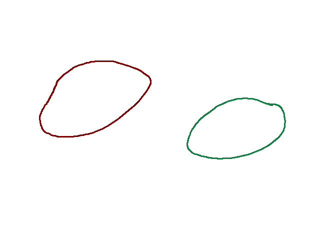
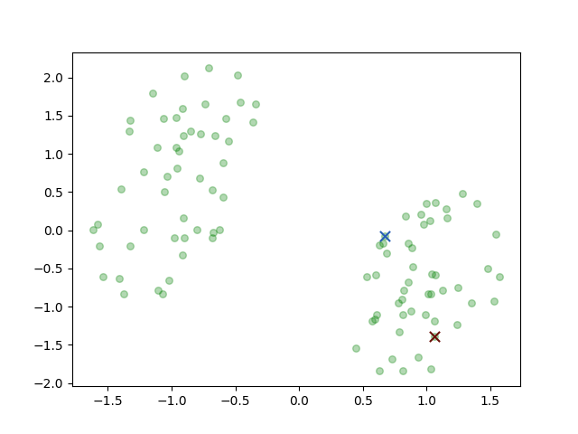
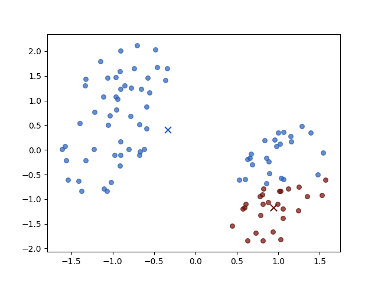
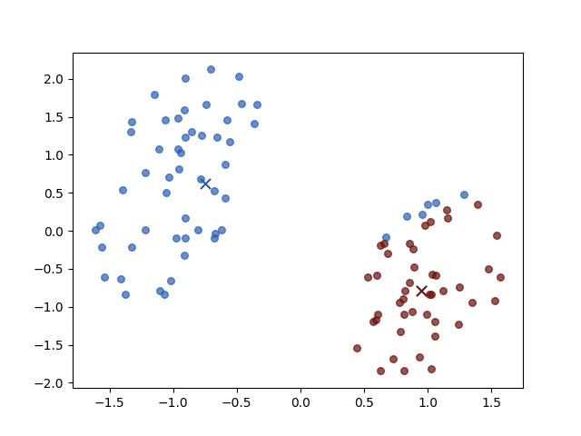
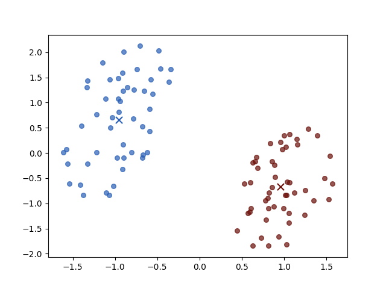

K-means Clustering
Keywords: K-means
Original form K-Means algorithm might be one of the most accessible algorithms in machine learning. And many books and courses started with it. However, if we convert the task which K-means dealt with into a more mathematical form, there would be more interesting aspects coming to us.
Clustering Problem1
The first thing we should do before introducing the algorithm is to make the task clear. And a precise mathematical form is usually the best way.
Clustering is a kind of unsupervised learning task. So there is no correct nor incorrect solution. Clustering is similar to classification during predicting since the output of clustering and classification is discrete. However, during training classifiers, we always have a certain target corresponding to every input. On the contrary, clustering has no target at all, and what we have is only
where $x_i\in\mathbb{R}^D$ for $i=1,2,\cdots,N$. And our mission is to separate the dataset into $K$ groups (where $K$ has been given before task)
An intuitive strategy of clustering based on two considerations:
- the distance between data points in the same group should be as small as possible.
- the distance between data points in the different groups should be as large as possible.
Basing on these two points, some concepts were formed. The first one is how to represent a group. We take
as the prototype associated with $i$th group. A group always contains several points, and a spontaneous idea is using the center of all the points belonging to the group as its prototype. To represent which group $\boldsymbol{x}_i$ in equation (1) belongs to, an indicator is necessary, and 1-of-K coding scheme is used, where the indicator:
for $k=1,2,\cdots,K$ representing the group number and $n = 1,2,\cdots,N$ denoting the number of sample point, and where $r{nk}=1$ then $r{nj}=0$ for all $j\neq k$.
Objective Function
A loss function is a good way to measure the quantity of our model during both training and testing stages. And in the clustering task loss function could not be used for we have no idea about loss. However, we can build another function that plays the same role as loss function and it is also the target of what we want.
According to the two base points above, we build our objective function:
In this objective function, the distance is defined as Euclidean distance(However, other measurements of similarity could also be used). Then the mission is to minimize $J$ by finding some certain ${r_{nk}}$ and ${\mu_k}$
K-Means Algorithm
Now, let’s represent the famous K-Means algorithm. The method includes two steps:
- Minimising $J$ respect to $r_{nk}$ keeping $\mu_k$ fixed
- Minimising $J$ respect to $\muk$ keeping $r{nk}$ fixed
In the first step, according to equation (4), the objective function is linear of $r_{nk}$. So there is a close solution. Then we set:
And in the second step, $r_{nk}$ is fixed and we minimise objective function $J$. For it is quadratic, the minimume point is on the stationary point where:
and we get:
$r_{nk}$ is the total number of points from the sample ${x_1,\cdots, x_N}$ who belong to prototype $\mu_k$ or group $k$ at current step. And $\mu_k$ is just the average of all the points in the group $k$.
This two-step, which was calculated by equation (5),(7), would repeat until $r_{nk}$ and $\mu_k$ not change.
The K-means algorithm guarantees to converge because at every step the objective function $J$ is reduced. So when there is only one minimum, the global minimum, the algorithm must converge.
Input Data Preprocessing before K-means
Most algorithms need their input data to obey some rules. To the K-means algorithm, we rescale the input data to mean 0 and variance 1. This is always done by
where $x_n^{(i)}$ is the $i$th component of the $n$th data point, and $x_n$ comes from equ (1), $\bar{x}^{(i)}$ and $\delta^{i}$ is the $i$th mean and standard deviation
Python code of K-means
1 |
|
and entir project can be found : https://github.com/Tony-Tan/ML and please star me(^_^).
Results during K-means
We use a tool https://github.com/Tony-Tan/2DRandomSampleGenerater generating the input data from:

There are two classes from the brown circle and green circle. Then the K-means algorithm initial two prototypes, the centers of groups, randomly:

the two crosses represent the centers.
And then we iterate the two steps:
Iteration 1

Iteration 2

Iteration 3

Iteration 4

Iteration 3 and 4 are unchanged, for both objective function value $J$ and parameters. Then the algorithm stoped. And different initial centers may have different convergence speed.
References
1. Bishop, Christopher M. Pattern recognition and machine learning. springer, 2006. ↩